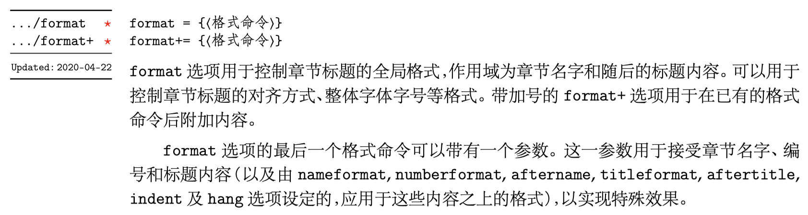
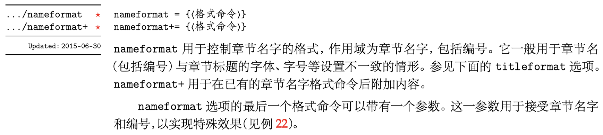
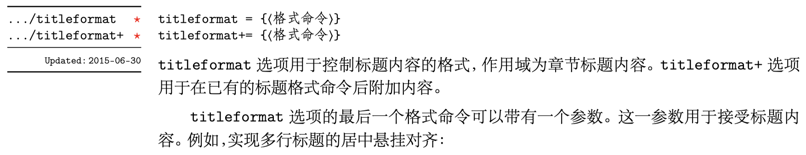
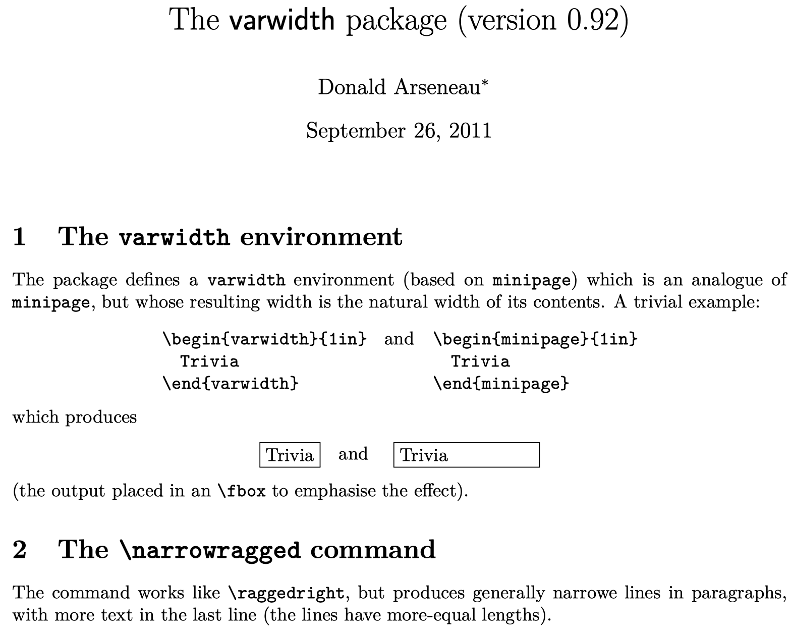
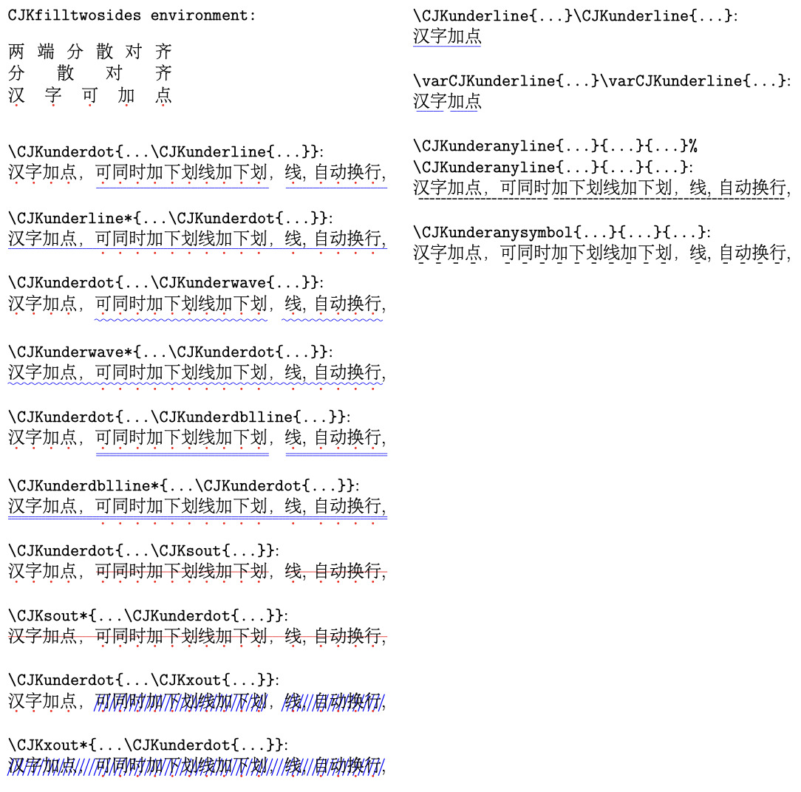

在 LaTeX 中使用中文
最后更新：2022.03.25, 11:55
ctex 标题设置
Title Control
The basic conception about title can be shown as
More details can ref



A nice application is use the above command to realize pending and right-justify type setting for chapter
1 | |
The result looks like
Note the about code use the package varwidth, which is used to replace \minipage. More details can see the package doc

Title of Content
The command is looks like
1 | |
e.g.
1 | |
为中文添加下划线
最早写于 2021-10-20
前几天在编译一个旧文件时, 发现添加下划线的指令 \CJKunderwave 报错显示没有该指令。经研究发现, 这是由于 LaTeX 发行版的问题。这个指令用来添加下划波浪线, 原本是由宏包 CJKfntef 提供, 但 2021 年的发行版之后, 不能通过 \usepackage{CJKfntef} 导入这些指令了, 而只能通过在调用 ctex 宏包时加入选项 CJKfntef, 如
1 | |
下图给出了 texdoc CJKfntef 给出的宏包指令及效果

另一面, 也有采用宏包 CJKulem 的手段 [1] [2] [3] , 其相当与中文版的 ulem 宏包, 其解决了单独使用 ulem 宏包时无法换行的问题。
Reference
本博客所有文章除特别声明外，均采用 CC BY-NC-SA 4.0 协议 ，转载请注明出处！